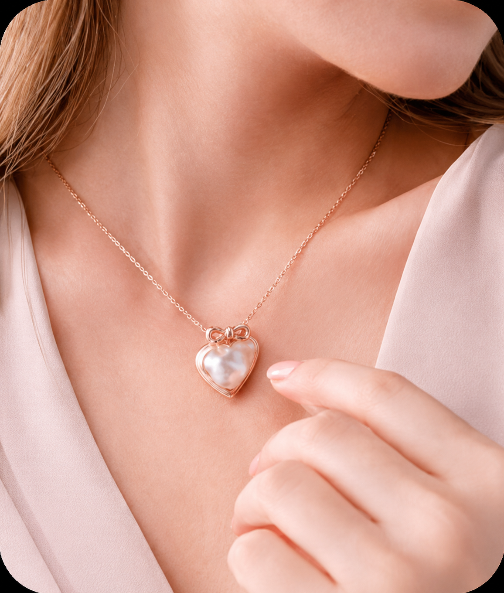
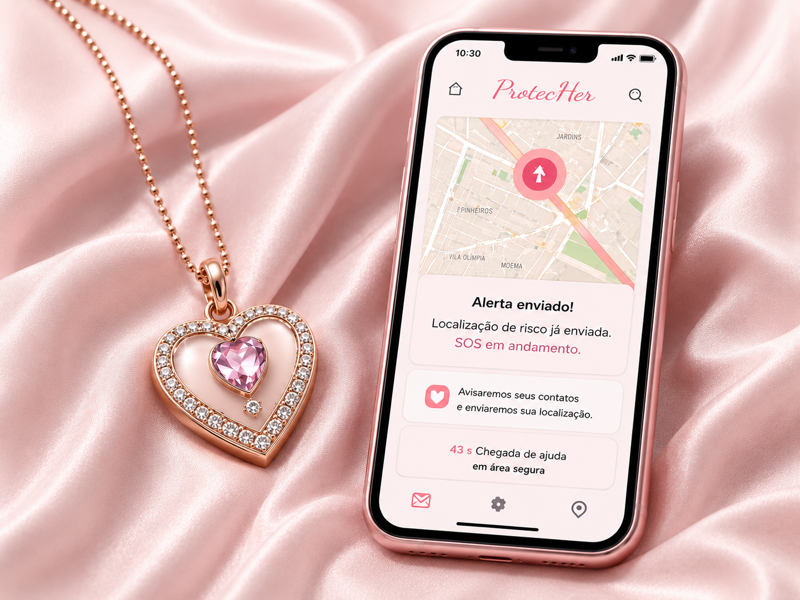
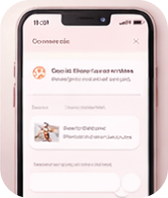
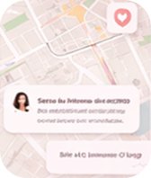
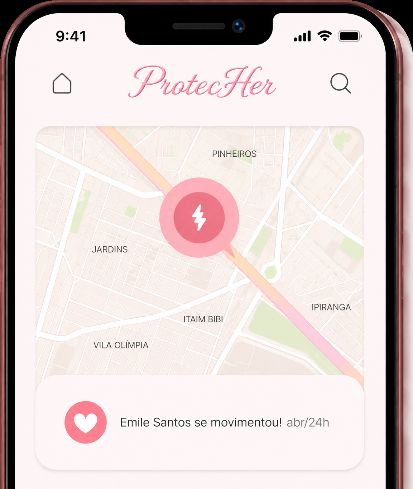

1. Toque 3 vezes na joia
O sensor BLE na joia detecta o gesto e envia um sinal via Bluetooth para o aplicativo no celular.

Uma joia inteligente que aciona SOS com localização em tempo real
Ou escaneie para baixar o app em seu celular

Tecnologia Bluetooth, GPS e nuvem trabalhando juntas para proteger você
O sensor BLE na joia detecta o gesto e envia um sinal via Bluetooth para o aplicativo no celular.

O app registra o alerta no servidor via API. O sistema cria um alerta ativo e inicia o monitoramento.

O GPS envia a posição em tempo real. Contatos de emergência recebem push notifications com a localização.

O dashboard exibe cada alerta com localização, tempo de resposta e status em tempo real.

Este projeto nasce de uma necessidade real e urgente: a segurança de mulheres no dia a dia. Nos últimos anos, os casos de violência contra a mulher têm crescido de forma preocupante. Muitas situações acontecem em momentos comuns — ao voltar para casa, durante um trajeto, ou até mesmo em ambientes que deveriam ser seguros. Em muitos desses casos, o tempo de reação é essencial.
Pensando nisso, desenvolvemos uma solução simples, discreta e acessível.
A joia inteligente foi criada para permitir que, em uma situação de risco, a usuária consiga pedir ajuda de forma rápida e silenciosa, apenas com um gesto. Ao pressionar a joia, um sinal é enviado para o celular, que compartilha automaticamente a localização com contatos de confiança e inicia o envio de informações em tempo real.
A proposta do projeto é unir tecnologia e cuidado, criando um dispositivo que se integra ao cotidiano sem chamar atenção, mas que pode fazer toda a diferença em um momento de emergência.
Mais do que um produto, este projeto busca trazer mais autonomia, segurança e tranquilidade, utilizando a tecnologia como ferramenta de proteção.